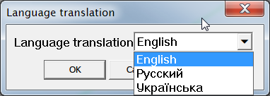
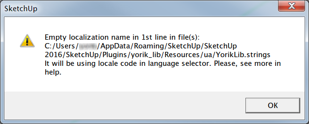
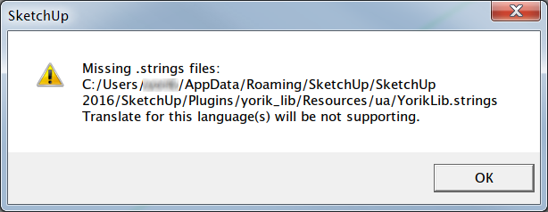

About
Plugin for Sketchup® 2014 Pro or higher. Added new features, first of all for personal use, from standard Sketchup® API LanguageHandler for localization of plugins.
It's only one file yorik_langhandler.rb and directory yorik_langhandler, which includes subdirectories with localized strings for two languages: English (en_US) and Russian (ru), also manual in these languages. This localized files using for system errors when localization works incorrect. Plugins for localization has data structure which described below. But data structure of this plugin looks like this:

Similar with standard tool:
- rules of creating
.stringsfiles - using same
.stringsfiles from standard tool
Differences with standard tool:
- ability to change language (localization) of interface (need restart of Sketchup)
- language of plugin does not depending from interface language of Sketchup
Data structure
This structure is only a recommendation. Any developer can adopt for concrete situation. Important only availability files for default language localization and valid path for files of other language.
Process to set value of the arguments for creating object of YorikLangHandler class for example of plugin Yorik Lib:
- Typical files structure of localized plugin.
- Initial data for localized variables.
- Example of the
.stringsfile for default language (English).

- File name with localized strings. In this case using plugin's name.
- Path to the directory with localized data.
- Default locale. Comment in 1-st line of the
.stringsfile. Necessarily must to be in all files of default localization. This value will be using like language menu item. - Locale code for default language. Name of the subdirectory in the directory
Resources/. - System file with content of the current code (directory name) chosen language. Will be creating automatic if it will bee absent. Not for manual editing (!).
- localization file type. Can be changed if it is needed.
More details can be finding in source code on GitHub or in the file yorik_lib/yorik_lib_core.rb.
Using
Include file in source code:
require "yorik_langhandler.rb"
Before using localization tool you need to prepare strings variable like in the original tool (see more in LanguageHandler), creating localization file (.strings) and data structure (see above). After that you can change language in target plugin.
Language translation menu created by method call locale_mbox on object lib_lh of YorikLangHandler class. For example showing for user_menu. Also can be calling by button.
user_menu.add_item(lib_lh["Language translation"]) { lib_lh.locale_mbox(lib_lh["Language translation"]) }
"Language translation" — localized string that will be menu item and window title.
Now languages selection will be available in menu (example for plugin Yorik Lib):
Tools ► Yorik Lib ► Language translation

Errors
In creating plugin's translation it's necessary to keep correct data structure for default language. For other languages will allowed to simplify data. For example:
- When localization data for other languages are missing it will be using default language.
In some case data structure of one language can be corrupted. It will be showing messagebox with error but still working translation for other languages:
- When comment with language's name in 1-st line is absent it will be using locale code (directory name) like menu item in Languages translation.
- Showing after activate menu with Languages translation if in directory with name of locale code in
Resources/.stringsfile will be absent. Also will be showing list of missing files. Translation for this languages will be not available.


Correct structure of .strings files depends from developer. Need to check matching strings in .strings file if in some case translation will be absent for this string.
Installing
Plugin works only in Sketchup® 2014. Update before install. Installing Ruby Plugins in Sketchup.
Development
Source code on GitHub. Documentation on rubydoc.info.